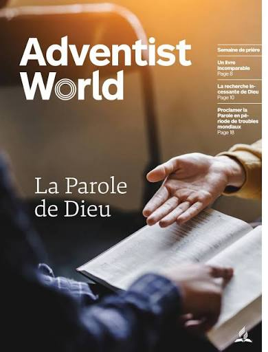

Les Adventistes du Septième-Jour sont des chrétiens croyant à la Bible et qui fondent leur foi, leur espérance et leur avenir en Jésus-Christ et Sa seconde venue. La Conférence Générale est le siège mondial de l’Église Adventiste du septième jour. Elle coordonne les activités mondiales de l’Église Adventistes du septième jour avec plus de 21 millions de membres. C’est un organisme créé avec la conviction qu’aucun homme ne devrait être gouverné d’après les convictions d’un autre et que toute décision devrait être prise par une assemblée.

L’Église Adventiste du septième jour a le plus grand réseau protestant d’hôpitaux et de cliniques dans le monde entier, avec 229 hôpitaux et sanatoriums, 1 603 cliniques et dispensaires et 144 centres d’accueil, y compris des maisons de retraite, des résidences pour seniors, des orphelinats et des foyers pour enfants.
Aux États-Unis, le mode de vie des Adventistes du septième jour a été présenté par le magazine National Geographic, CNN, le Today Show et le Blue Zones, livre à succès publié par le New York Times qui identifie les quelques régions du monde où la longévité des habitants, du fait de leur mode de vie, est très nettement au-dessus de la moyenne Parmi les organisations confessionnelles, l’Église Adventiste du septième jour a le deuxième plus grand réseau d’écoles dans le monde, comptant plus de 9 400 écoles avec plus de 2 millions d’élèves inscrits. L’une des principales contributions de l’Église Adventiste du septième jour a été dans le domaine de la promotion de la liberté de croyance pour tous.
Les candidats au baptême et les personnes accueillies dans la communauté sur profession de foi affirmeront leur acceptation des croyances fondamentales en présence de la communauté lo- cale ou d’un autre organisme approprié.(Voir 2 paragraphes plus haut.)
Le pasteur ou l’ancien doit poser aux candidats les questions suivantes, auxquels ils répondront soit en indiquant verbalement
leur assentiment, soit en levant la main, soit par toute autre mé- thode appropriée correspondant à la culture locale.
1. Croyez-vous en un seul Dieu: père, Fils et Saint-esprit, une unité de trois personnes également éternelles?
2. Acceptez-vous la mort de Jésus-Christ au Calvaire comme sacrifice expiatoire pour vos péchés et croyez-vous que, par la grâce de Dieu, au moyen de la foi en son sang versé, vous êtes sauvé du péché et de sa conséquence?
3. Acceptez-vous Jésus-Christ comme votre Seigneur et votre Sauveur personnel, et croyez-vous que Dieu, en Christ, a par- donné vos péchés et vous a donné un cœur nouveau, et renon- cez-vous aux mauvais chemins de ce monde?
4. Acceptez-vous par la foi la justice du Christ, votre interces- seur dans le sanctuaire céleste, et croyez-vous en sa promesse de vous donner la grâce qui transforme et la capacité de vivre une vie aimante, centrée sur le Christ, en privé comme en public ?

5. Croyez-vous que la Bible est la parole inspirée de Dieu, l’unique règle de foi et de conduite du chrétien? Vous engagez- vous à passer du temps régulièrement à prier et à étudier la Bible?
6. Reconnaissez-vous dans les dix commandements une expres- sion du caractère divin et une révélation de sa volonté? Avez- vous l’intention, par la puissance du Christ qui demeure en vous, de garder cette loi, y compris le quatrième commandement, qui requiert l’observance du septième jour de la semaine comme le sabbat du Seigneur et le mémorial de la création?
7. Attendez-vous le prochain retour de Jésus, la bienheureuse espérance où « ce qui est mortel revêtira l’immortalité?» en vous préparant à rencontrer le Seigneur, voulez-vous témoigner de la bonté de son salut en utilisant vos talents pour amener à lui des êtres humains, afin de les aider à se préparer pour son apparition glorieuse ?
8. Acceptez-vous l’enseignement biblique des dons spirituels, et croyez-vous que le don de prophétie est l’une des marques dis- tinctives de l’Église du reste?
9. Croyez-vous à la nécessité d’une Église organisée? Avez-vous l’intention de rendre un culte à Dieu et de soutenir l’Église par vos dîmes et vos offrandes, ainsi que par vos efforts et votre in- fluence personnels?

10. Croyez-vous que votre corps est le temple du Saint-esprit? honorerez-vous Dieu en en prenant soin, évitant l’usage de ce qui est néfaste, et vous abstenant de toute nourriture impure; de l’usage, la fabrication ou la vente de boissons alcoolisées; de l’usage, la fabrication ou la vente du tabac sous toutes ses formes destinées à la consommation humaine ; et du mauvais usage ou du trafic de narcotiques ou d’autres drogues?
11. Connaissez-vous et comprenez-vous les principes bibliques fondamentaux tels qu’ils sont enseignés par l’Église adventiste du septième jour? Avez-vous l’intention, par la grâce de Dieu, d’ac- complir sa volonté en mettant votre vie en harmonie avec ces principes?
12. Acceptez-vous l’enseignement du Nouveau Testament au sujet du baptême par immersion, et désirez-vous recevoir ce bap- tême pour exprimer publiquement votre foi en Jésus et dans son pardon de vos péchés?
13. Acceptez-vous et croyez-vous que l’Église adventiste du septième jour est l’Église du reste de la prophétie biblique, où sont invitées et acceptées des personnes de toute nationalité, de toute race et de toute langue? Désirez-vous devenir membre de cette communauté locale de l’Église mondiale?
recherche............
Recherche ........